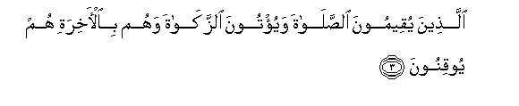
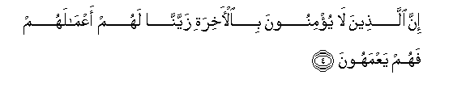
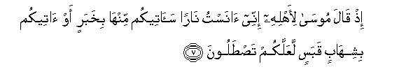
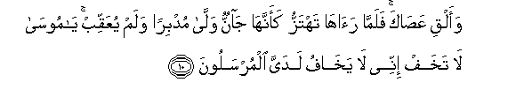
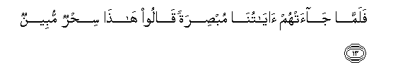

Sacred Texts Islam Index
Hypertext Qur'an Unicode Palmer Pickthall Yusuf Ali English Rodwell
Sūra XXVII.: Naml, or the Ants. Index
Previous Next

The Holy Quran, tr. by Yusuf Ali, [1934], at sacred-texts.com
Sūra XXVII.: Naml, or the Ants.
Section 1
1. Ta-seen tilka ayatu alqur-ani wakitabin mubeenin
1. Tā. Sīn.
These are verses
Of the Qur-ān,—a Book
That makes (things) clear;
2. Hudan wabushra lilmu/mineena
2. A Guide; and Glad Tidings
For the Relievers,—

3. Allatheena yuqeemoona alssalata wayu/toona alzzakata wahum bial-akhirati hum yooqinoona
3. Those who establish regular prayers
And give in regular charity,
And also have (full) assurance
Of the Hereafter.

4. Inna allatheena la yu/minoona bial-akhirati zayyanna lahum aAAmalahum fahum yaAAmahoona
4. As to those who believe not
In the Hereafter, We have
Made their deeds pleasing
In their eyes; and so they
Wander about in distraction.
5. Ola-ika allatheena lahum soo-o alAAathabi wahum fee al-akhirati humu al-akhsaroona
5. Such are they for whom
A grievous Penalty is (waiting):
And in the Hereafter theirs
Will be the greatest loss.
6. Wa-innaka latulaqqa alqur-ana min ladun hakeemin AAaleemin
6. As to thee, the Qur-ān
Is bestowed upon thee
From the presence of One
Who is Wise and All-Knowing.

7. Ith qala moosa li-ahlihi innee anastu naran saateekum minha bikhabarin aw ateekum bishihabin qabasin laAAallakum tastaloona
7. Behold! Moses said
To his family "I perceive
A fire; soon will I bring you
From there some information,
Or I will bring you
A burning brand to light
Our fuel, that ye may
Warm yourselves.
8. Falamma jaaha noodiya an boorika man fee alnnari waman hawlaha wasubhana Allahi rabbi alAAalameena
8. But when he came
To the (Fire), a voice
Was heard: "Blessed are those
In the Fire and those around:
And Glory to God,
The Lord of the Worlds.
9. Ya moosa innahu ana Allahu alAAazeezu alhakeemu
9. "O Moses! Verily,
I am God, the Exalted
In Might, the Wise!...

10. Waalqi AAasaka falamma raaha tahtazzu kaannaha jannun walla mudbiran walam yuAAaqqib ya moosa la takhaf innee la yakhafu ladayya almursaloona
10. "Now do thou throw thy rod!"
But when he saw it
Moving (of its own accord)
As if it had been a snake,
He turned back in retreat,
And retraced not his steps:
"O Moses!" (it was said),
"Fear not: truly, in My presence,
Those called as apostles
Have no fear,—
11. Illa man thalama thumma baddala husnan baAAda soo-in fa-innee ghafoorun raheemun
11. "But if any have done wrong
And have thereafter substituted
Good to take the place of evil,
Truly, I am Oft-Forgiving,
Most Merciful.
12. Waadkhil yadaka fee jaybika takhruj baydaa min ghayri soo-in fee tisAAi ayatin ila firAAawna waqawmihi innahum kanoo qawman fasiqeena
12. "Now put thy hand into
Thy bosom, and it will
Come forth white without stain
(Or harm): (these are) among
The nine Signs (thou wilt take)
To Pharaoh and his people:
For they are a people
Rebellious in transgression."

13. Falamma jaat-hum ayatuna mubsiratan qaloo hatha sihrun mubeenun
13. But when Our Signs came
To them, that should have""
Opened their eyes, they said:
"This is sorcery manifest!"
14. Wajahadoo biha waistayqanat-ha anfusuhum thulman waAAuluwwan faonthur kayfa kana AAaqibatu almufsideena
14. And they rejected those Signs
In iniquity and arrogance,
Though their souls were convinced
Thereof: so see what was
The end of those
Who acted corruptly!